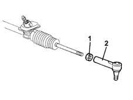
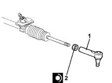

4110B14 steering links - r+r with steering box removed
- Path
- Procedures > 41 STEERING > 4110 STEERING CONTROL AND LINKAGE > 4110B steering control linkage > 4110B14 steering links - r+r with steering box removed
- Kind
- repair procedure (removal / refitting; the operation number is the code)
- Applies to
- all engines; all production periods
- Interactive page
- https://sloeber94.github.io/elrnDB-lYpsln/en/#/2429219
Applies to: all engines; all production periods
 Removing
Removing
 Refitting
RefittingMeasure the length of the steering rods to be used for refitting.
1. Loosen the nuts fixing the steering rods to the steering box.
2. Undo the steering rods from the steering box and remove them.

Applies to: all engines; all production periods
Refitting
Removing1. Place the steering rods in their housings, tighten them to the steering box ensuring the lengths measured at the removal are restored.
2. Tighten the nuts fixing the steering rods to the steering box to the recommended torque.
 | Fastening | Component | Ø | Value (daNm) |
|---|---|---|---|---|
2 | Nut | ADJUSTABLE STEERING LINKS | M12 | (Steering box side) 3.1 ÷ 3.7 |
